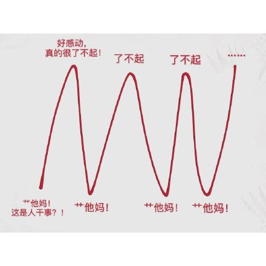

 biology COVID-19 Last updated: 2020-05-24 Origin Skip Sequence 2019-nCoV. BLAST SARS-CoV RaTG13 (中华菊头蝠, 云南) Spike (S) protein <75% [2] 93% [2] Envelope (E) protein Membrane (M) protein Nucleocapsid (N) protein Sequence